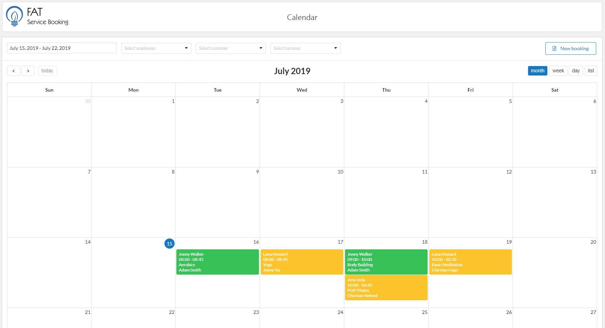
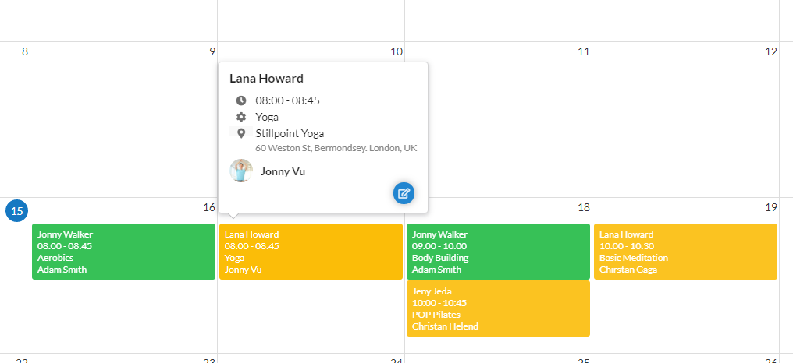

The “Calendar” page is a scheduler, it shows a reservation calendar with all scheduled appointments and events organized by employees, services, and locations.
There are four calendar view: Month, Week, Day and List. You can easy find by employee, service, location or customer and easy edit or update reservation info
To use calendar, please do follow:

